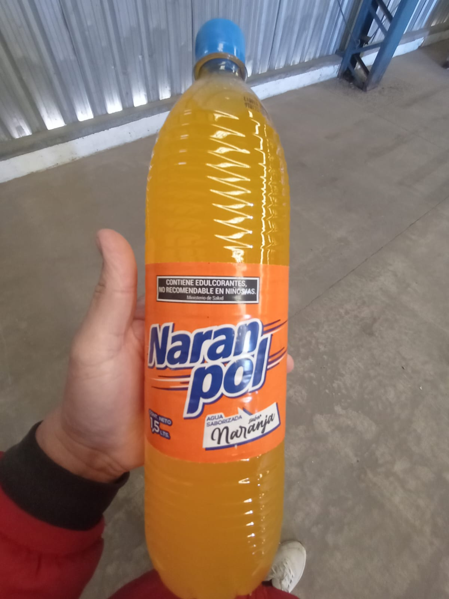
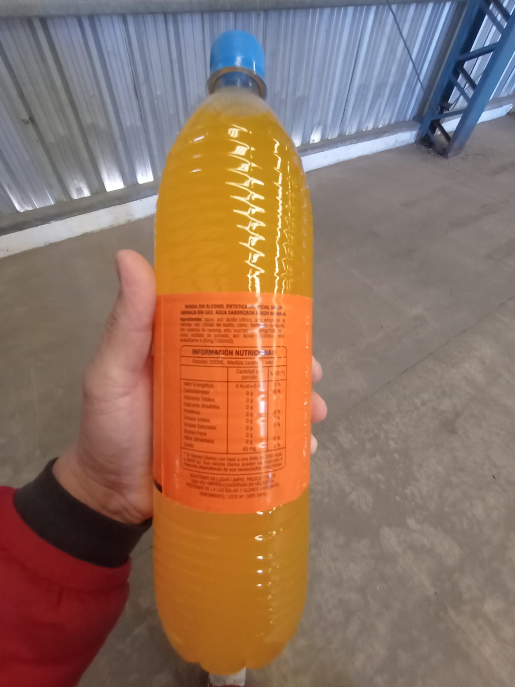
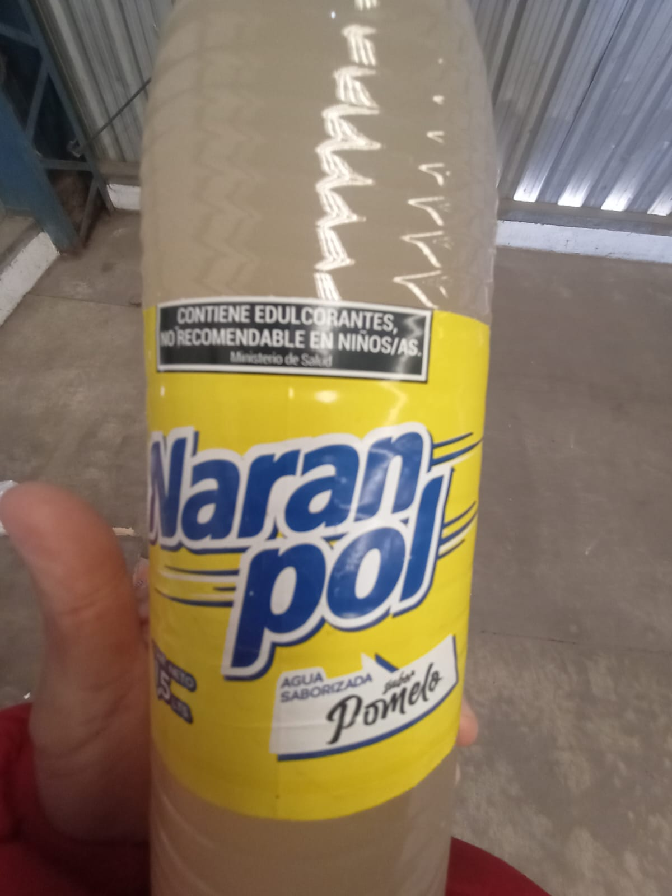
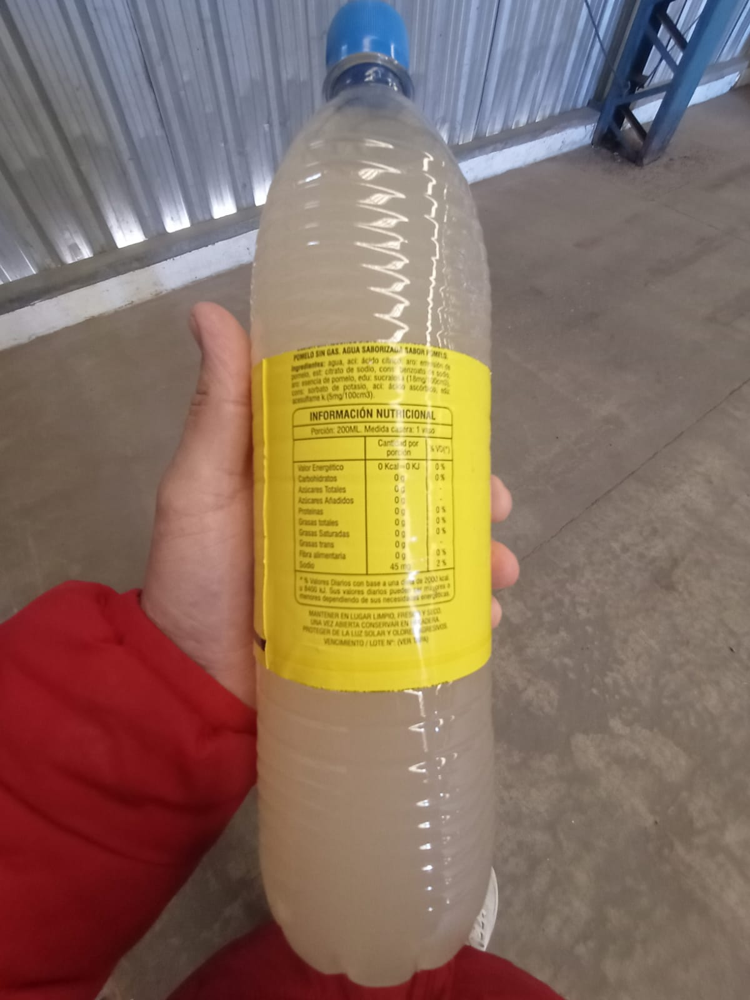

Conocé tu próximo sabor.
Agua saborizada · 1,5 litros
Naranpol Naranja
Giralo, mirá la etiqueta y descubrí cada detalle.
Arrastrá hacia los lados para girar. Hacia arriba o abajo para inclinar y mover el líquido.
También podés usar las flechas del teclado. ↺ vuelve al frente.
Fotos utilizadas como referencia



